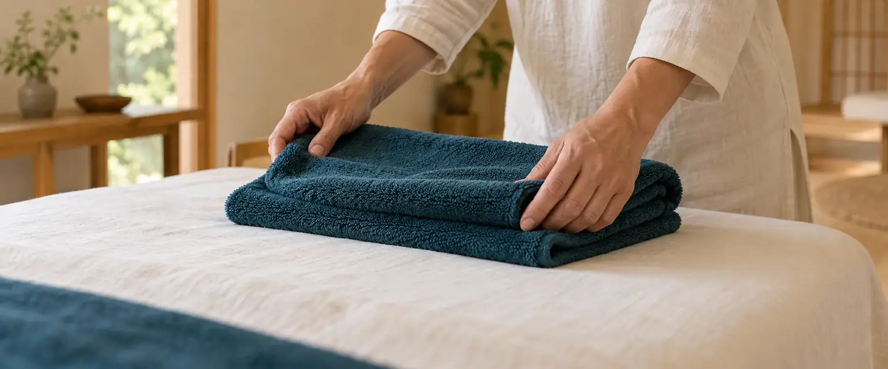

- 初回
- 5,500円約75分
- 2回目から
- 4,950円約60分
- 受付
- 平日 20:00まで土曜は17時まで
- 予約
- 電話・Web当日は電話で
税込・見本用の架空価格。回数券のおすすめはしていません。健康保険は使えません。
「なんだか重い」日に、
寄っていく場所です。
灯町の商店街で、ひとりで営む整体院です。受付から施術まで同じ人が担当します。平日は20時まで受付。着替えはなく、仕事帰りにそのまま受けられます。
- 8:10朝
振り向くと、首が回りにくい
- 14:30昼
画面に向かいっぱなしで、肩が上がったまま
- 19:40夜
立ち仕事のあと、腰が重い帰り道
- 週明け
庭仕事や片付けのあと、かがむのがおっくう
しなりがすること
- 肩・首・腰まわりのこわばりを、手で整えます
- 生活の様子を聞いて、次に来る目安を一緒に決めます
- 家でできる、短い体の動かし方をお伝えします
しないこと
- 病気の診断や治療（医療機関ではありません）
- 回数券やまとめ払いのおすすめ
- 強い痛み・しびれがあるときの施術（先に医療機関へ）
体の変わり方には個人差があります。強い痛み・しびれ・けがのあとは、先に医療機関へ。
60分の使い方を、
先にお見せします。
- 0
受付5分
荷物を置いて、5問だけの問診票を書きます。
- 5
話を聞く10分
どこが、いつから、どんなふうに。初回は長めにとります。
- 15
施術40分
手でゆっくり整えます。強さは途中でも変えられます。強く押したり、音を鳴らしたりはしません。
- 55
次回の目安5分
次に来る目安を一緒に決めます。決めなくてもかまいません。
60分
料金は、
1回ごとに。
回数券やまとめ払いはありません。その日の分だけ、その日にお支払いください。

| 内容 | 時間 | 料金（税込） |
|---|---|---|
| 初回話を聞く時間を含む | 75分 | 5,500円 |
| 2回目以降首・肩・腰まわり | 60分 | 4,950円 |
| 短時間コース首と肩のみ | 30分 | 2,750円 |
- 回数券
- なし。1回ごとのお支払いです
- お支払い
- 現金・電子マネー
- キャンセル
- 前日までの連絡で無料
すべて税込・見本用の架空価格です。健康保険は使えません。

仕事帰りの、20時まで。
| 月 | 11:00 – 20:00 | |
|---|---|---|
| 火 | 11:00 – 20:00 | |
| 水 | 11:00 – 20:00 | |
| 木 | 11:00 – 20:00 | |
| 金 | 11:00 – 20:00 | |
| 土 | 10:00 – 17:00 | |
| 日 | 休み |
灯町駅から、歩いて約4分。

- 場所
- 架空県灯町2丁目 灯町商店街のなか
- 目印
- 郵便ポストの角から2軒先の木の扉
- 駐車場
- なし。近くの有料駐車場へ
住所は見本上の設定。扉の写真はAI生成のイメージです。
よく聞かれること。
何回くらい通えばいいですか？
決まった回数はありません。次に来る目安をその都度お伝えし、来るかどうかはご自身で決めていただきます。
着替えは必要ですか？
要りません。普段の服のままで受けられます。
痛いことはされませんか？
強く押したり、音を鳴らしたりはしません。強さは途中でも変えられます。
健康保険は使えますか？
使えません。医療機関ではないため、すべて自費（上の料金表のとおり）です。
当日でも予約できますか？
空きがあれば受けられます。当日は電話で。Webの予約は前日までです。
予約は、電話かWebで。
1回60分・初回5,500円。空き状況だけの電話も歓迎です。（見本用の架空の設定）